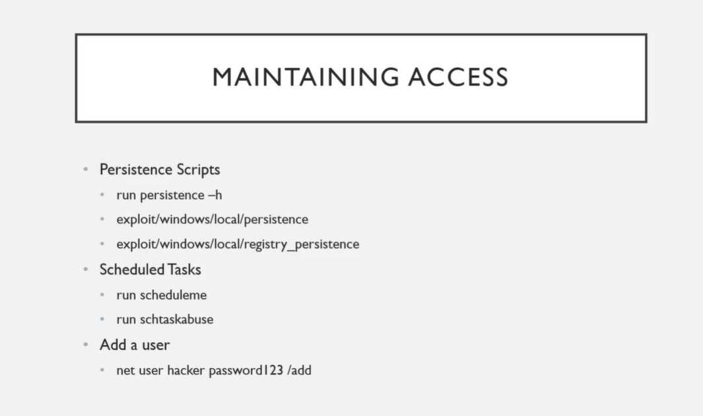

As an attacker if something were have to happen to the machine that we are on we should have a way to gain access back to that machine.
Eaxmple: we're in the middle working on a shell and this user decides to shut down the computer and go home for the day.
Guess what ?_?
we are going to loose that shell.
Now typically as a Penetration Tester you're not going to be doing this and if we talk in terms of maintaining access that we are going to do is ADD a User for persistence.
Metasploit: Persistence Scripts is dangerous cuz what u're doing here is you are opening a port on a machine and that port has zero authetication mechanism.
Mentor says that he don't have a reason to do it on a pentest.
Pentesting is kind of being loud and adding a user is definitely being LOUD
75% of the time or greater ur client's not gonna catch this
